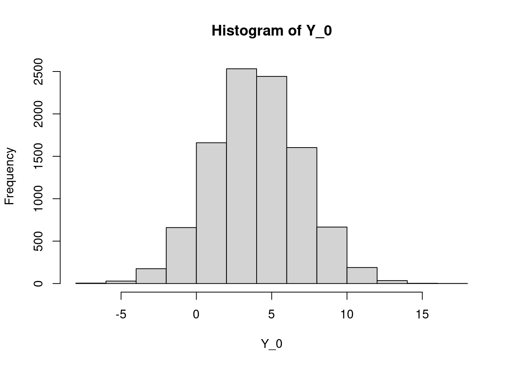
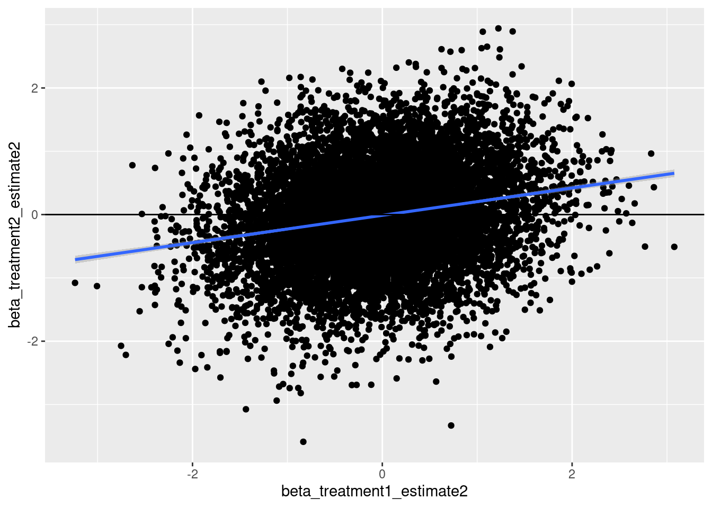

2024-07-04_SimulateIndirectlyComparingTreatments
2024-07-04
Last updated: 2024-07-09
Checks: 7 0
Knit directory:
2024_comparativesplicing/analysis/
This reproducible R Markdown analysis was created with workflowr (version 1.7.0). The Checks tab describes the reproducibility checks that were applied when the results were created. The Past versions tab lists the development history.
Great! Since the R Markdown file has been committed to the Git repository, you know the exact version of the code that produced these results.
Great job! The global environment was empty. Objects defined in the global environment can affect the analysis in your R Markdown file in unknown ways. For reproduciblity it’s best to always run the code in an empty environment.
The command set.seed(19900924) was run prior to running
the code in the R Markdown file. Setting a seed ensures that any results
that rely on randomness, e.g. subsampling or permutations, are
reproducible.
Great job! Recording the operating system, R version, and package versions is critical for reproducibility.
Nice! There were no cached chunks for this analysis, so you can be confident that you successfully produced the results during this run.
Great job! Using relative paths to the files within your workflowr project makes it easier to run your code on other machines.
Great! You are using Git for version control. Tracking code development and connecting the code version to the results is critical for reproducibility.
The results in this page were generated with repository version 5495e15. See the Past versions tab to see a history of the changes made to the R Markdown and HTML files.
Note that you need to be careful to ensure that all relevant files for
the analysis have been committed to Git prior to generating the results
(you can use wflow_publish or
wflow_git_commit). workflowr only checks the R Markdown
file, but you know if there are other scripts or data files that it
depends on. Below is the status of the Git repository when the results
were generated:
Ignored files:
Ignored: .Rhistory
Ignored: .Rproj.user/
Ignored: code/.snakemake/
Ignored: code/GenomeFiles/
Ignored: code/SJC_annotations_d5d1043c36aa60f014dee37e6f54418aeac524c63858131c0c68769dba597410.pckle
Ignored: code/Session.vim
Ignored: code/kaessmanAnalysis/
Ignored: code/kaessman_AS_dat/
Ignored: code/logs/
Ignored: code/rules/.GenomeAnnotations.smk.swp
Ignored: code/scratch/
Untracked files:
Untracked: analysis/2024-07-08_CheckLeafcutter2_Classifications.Rmd
Untracked: code/scripts/LeafcutterJuncClassificationsToAS_segments.R
Unstaged changes:
Modified: code/Snakefile
Modified: code/envs/bedparse.yml
Modified: code/rules/GenomeAnnotations.smk
Modified: code/scripts/AS_ExonSegments_to_AS_Junctions.py
Modified: code/scripts/leafcutter2
Note that any generated files, e.g. HTML, png, CSS, etc., are not included in this status report because it is ok for generated content to have uncommitted changes.
These are the previous versions of the repository in which changes were
made to the R Markdown
(analysis/2024-07-04_SimulateIndirectlyComparingTreatments.Rmd)
and HTML
(docs/2024-07-04_SimulateIndirectlyComparingTreatments.html)
files. If you’ve configured a remote Git repository (see
?wflow_git_remote), click on the hyperlinks in the table
below to view the files as they were in that past version.
| File | Version | Author | Date | Message |
|---|---|---|---|---|
| Rmd | 5495e15 | Benjmain Fair | 2024-07-08 | updates |
| html | 5495e15 | Benjmain Fair | 2024-07-08 | updates |
library(tidyverse)── Attaching packages ─────────────────────────────────────── tidyverse 1.3.1 ──✔ ggplot2 3.3.6 ✔ purrr 0.3.4
✔ tibble 3.1.7 ✔ dplyr 1.0.9
✔ tidyr 1.2.0 ✔ stringr 1.4.0
✔ readr 2.1.2 ✔ forcats 0.5.1── Conflicts ────────────────────────────────────────── tidyverse_conflicts() ──
✖ dplyr::filter() masks stats::filter()
✖ dplyr::lag() masks stats::lag()Intro
Simple model for expression change after treatment for a single gene
\(Y = Y_0 + \beta + \epsilon\)
\(Y\) is measured expression level of a gene after treatment, \(Y_0\) is expression of control, \(\beta\) is effect size, \(\epsilon\) is some random error (\(\mathcal{N}(\mu=0, \sigma)\)). Similarly, the measured expression of a control sample is
\(Y = Y_0 + \epsilon\)
One could expand this to vector notation for multiple samples, but why bother for this toy example.
And of course, real DE analysis is more complicated than these simple models because of how it borrows information across genes to estimate dispersion per gene… But let’s keep this simple.
Now, consider 10000 genes. I’m going to simulate some stuff, saving the variable names similar to notation above but keeping in mind each is a vector now representing \(Y_0\), \(Y\), etc, across 10000 genes…
# "baseline" (control) expression level.
# Let's say true control expression across genes is lognormal, or rather normal on a log scale
# let's use some parameters that somewhat resemble real RNA-seq data for log2RPKM across 1000 genes.
Y_0 <- rnorm(mean = 4, sd = 3, n = 10000)
hist(Y_0)
| Version | Author | Date |
|---|---|---|
| 5495e15 | Benjmain Fair | 2024-07-08 |
Now simulate some betas. Let’s say the betas (representing log2FC) are also normally distributed. And let’s make two different vectors of betas, for two different (and completely independent treatments with uncorrellated) true effects. I’m trying to pick parameters for these normal distributions that sort of match my intuitinos on what would be really measured in an RNA-seq experiment, where like ~90% of genes have less than two-fold change. But different treatments have different beta vectors (across genes), and my intuitions might be off on what the distribution of “true” effects is. We can play with these parameters later.
beta_treatment1 <- rnorm(mean=0, sd=0.5, n=10000)
hist(beta_treatment1)beta_treatment2 <- rnorm(mean=0, sd=0.5, n=10000)
hist(beta_treatment2)plot(beta_treatment1, beta_treatment2)# betas are uncorrelated
correlation <- cor.test(beta_treatment1, beta_treatment2)
print(correlation$estimate) cor
0.002531988 betas for two treatments are uncorrelated (R=0.002532).
Ok, now let’s simulate some real observed values by adding the random error term. Let’s simulate two control samples, and one of each treatment. How does the random measurement error compare to the true effect sizes. Well I suppose that depends on the nature of the treatment (eg, the amount of drug, the amount of hypoxia, etc) among other things.
# Let's use a slightly smaller sigma for the error term for now
error_sigma <- 0.5
observed.control.1 <- Y_0 + rnorm(mean=0, sd=error_sigma, n=10000)
observed.control.2 <- Y_0 + rnorm(mean=0, sd=error_sigma, n=10000)
observed.treatment.1 <- Y_0 + beta_treatment1 + rnorm(mean=0, sd=error_sigma, n=10000)
observed.treatment.2 <- Y_0 + beta_treatment2 + rnorm(mean=0, sd=error_sigma, n=10000)Now let’s compare the differences in observed expression between different samples.
plot(observed.control.1, observed.control.2)print(cor(observed.control.1, observed.control.2))[1] 0.9724647Just like real RNA-seq, control replicates correlate very well (R>0.95)
Now let’s plot \(Y-Y_0\), an estimate of treatment effects. Let’s estimate effects both treatments, using independent control samples for each… start with treatment 1…
# estimate of betas (across genes)
beta_treatment1_estimate <- observed.treatment.1 - observed.control.1
hist(beta_treatment1_estimate)# true betas
hist(beta_treatment1)
# scatter plot
plot(beta_treatment1, beta_treatment1_estimate)…And same for treatment2
# estimate of betas (across genes)
beta_treatment2_estimate <- observed.treatment.2 - observed.control.2
hist(beta_treatment2_estimate)# true betas
hist(beta_treatment2)
# scatter plot
qplot(beta_treatment2, beta_treatment2_estimate)And confirm that beta estimates for two treatments are uncorrelated across genes…
qplot(beta_treatment1_estimate, beta_treatment2_estimate) +
geom_smooth(method='lm') +
geom_hline(yintercept = 0)`geom_smooth()` using formula 'y ~ x'print(cor.test(beta_treatment1_estimate, beta_treatment2_estimate))
Pearson's product-moment correlation
data: beta_treatment1_estimate and beta_treatment2_estimate
t = 2.972, df = 9998, p-value = 0.002966
alternative hypothesis: true correlation is not equal to 0
95 percent confidence interval:
0.01011564 0.04928120
sample estimates:
cor
0.02970982 Ok, now let’s repeat this the less kosher way, that reuses controls… In this case I will just average the controls. Not really what is done, but I think this simpler example still highlights the issue. While it makes sense to combine controls for maximum power if you are just concerned with estimating betas for one treatment, when comparing the beta estimates between treatments, this can lead to some misleading results.
beta_treatment1_estimate2 <- observed.treatment.1 - (observed.control.1 + observed.control.2)/2
beta_treatment2_estimate2 <- observed.treatment.2 - (observed.control.1 + observed.control.2)/2
qplot(beta_treatment1_estimate2, beta_treatment2_estimate2) +
geom_smooth(method='lm') +
geom_hline(yintercept = 0)`geom_smooth()` using formula 'y ~ x'
cor.test(beta_treatment1_estimate2, beta_treatment2_estimate2)
Pearson's product-moment correlation
data: beta_treatment1_estimate2 and beta_treatment2_estimate2
t = 22.524, df = 9998, p-value < 2.2e-16
alternative hypothesis: true correlation is not equal to 0
95 percent confidence interval:
0.2010238 0.2383315
sample estimates:
cor
0.219758 Ok, that introduced some artificial correlation. Not sure how realistic these simulations are though. Maybe the signal to noise of the treatments in real life is such that it doesn’t matter. Especially with more than just the couple replicates I simulated here. Or maybe not. And maybe downstream anaysis like GSEA aren’t sensitive enough to pick up on this small artificial correlation. Or maybe it is. Using independent controls before comparing betas between treatments leaves less room for question. Depending on the question, directly comparing treatments might also be applicable.
sessionInfo()R version 4.2.0 (2022-04-22)
Platform: x86_64-pc-linux-gnu (64-bit)
Running under: CentOS Linux 7 (Core)
Matrix products: default
BLAS/LAPACK: /software/openblas-0.3.13-el7-x86_64/lib/libopenblas_haswellp-r0.3.13.so
locale:
[1] LC_CTYPE=en_US.UTF-8 LC_NUMERIC=C LC_TIME=C
[4] LC_COLLATE=C LC_MONETARY=C LC_MESSAGES=C
[7] LC_PAPER=C LC_NAME=C LC_ADDRESS=C
[10] LC_TELEPHONE=C LC_MEASUREMENT=C LC_IDENTIFICATION=C
attached base packages:
[1] stats graphics grDevices utils datasets methods base
other attached packages:
[1] forcats_0.5.1 stringr_1.4.0 dplyr_1.0.9 purrr_0.3.4
[5] readr_2.1.2 tidyr_1.2.0 tibble_3.1.7 ggplot2_3.3.6
[9] tidyverse_1.3.1
loaded via a namespace (and not attached):
[1] Rcpp_1.0.12 lattice_0.20-45 lubridate_1.8.0 assertthat_0.2.1
[5] rprojroot_2.0.3 digest_0.6.29 utf8_1.2.2 R6_2.5.1
[9] cellranger_1.1.0 backports_1.4.1 reprex_2.0.1 evaluate_0.15
[13] highr_0.9 httr_1.4.3 pillar_1.7.0 rlang_1.0.2
[17] readxl_1.4.0 rstudioapi_0.13 whisker_0.4 jquerylib_0.1.4
[21] Matrix_1.5-3 rmarkdown_2.14 splines_4.2.0 labeling_0.4.2
[25] munsell_0.5.0 broom_0.8.0 compiler_4.2.0 httpuv_1.6.5
[29] modelr_0.1.8 xfun_0.30 pkgconfig_2.0.3 mgcv_1.8-40
[33] htmltools_0.5.2 tidyselect_1.1.2 workflowr_1.7.0 fansi_1.0.3
[37] crayon_1.5.1 tzdb_0.3.0 dbplyr_2.1.1 withr_2.5.0
[41] later_1.3.0 grid_4.2.0 nlme_3.1-157 jsonlite_1.8.0
[45] gtable_0.3.0 lifecycle_1.0.1 DBI_1.1.2 git2r_0.30.1
[49] magrittr_2.0.3 scales_1.3.0 cli_3.6.2 stringi_1.7.6
[53] farver_2.1.0 fs_1.5.2 promises_1.2.0.1 xml2_1.3.3
[57] bslib_0.3.1 ellipsis_0.3.2 generics_0.1.2 vctrs_0.4.1
[61] tools_4.2.0 glue_1.6.2 hms_1.1.1 fastmap_1.1.0
[65] yaml_2.3.5 colorspace_2.0-3 rvest_1.0.2 knitr_1.39
[69] haven_2.5.0 sass_0.4.1